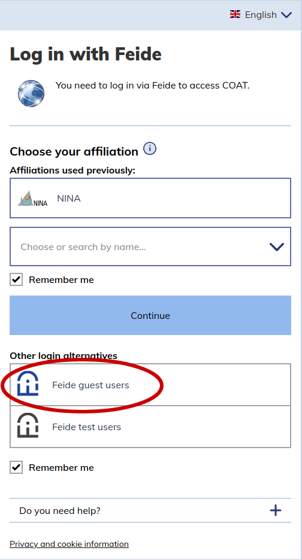

User types¶
COAT researchers and data managers can login to the Data Portal using their FEIDE account. External users cannot log into the data portal, and can only see those parts of public datasets that are not behind embargo. There are different roles which can be assigned to COAT users
regular users
members of a module
editors of a module
administrators
To be registered in the Data Portal, users need to login once. After the first login, users can be added to modules (by administrators or module editors).
Login with Feide¶
To create a user in the Data Portal you need to login fo the first time using FEIDE. [Eeva: add info what to do when one does not have Feide, this is the case for e.g. NPI]

If your institution is not available in Feide, you have to login using a Feide guest account:
And create an OpnIdP account:

Regular Users¶
Regular users are users who logged in to the system at least once. A regular user is listed as a possible choice in the metadata dropdown list for selecting the owner of a dataset. A regular user can be upgraded to member or editor of one or more modules. A regular user has no authorizations in the Data Portal, and can visualize the same things that a not-logged in user can:
See only the parts of public datasets that are not behind embargo
Can’t see private datasets
Can’t create new datasets
Members of a Module¶
A user can be member of multiple Modules
Members of a Module:
Can’t create new datasets
Can see private datasets of a Module
Can see behind-embargo data of a Module
Editors of a Module¶
A user can be editor of multiple Modules
Editors of a Module:
Can add members to a Module
Can create datasets for a specific Module
Can visualize private datasets of a Module
Administrators¶
They have superpowers